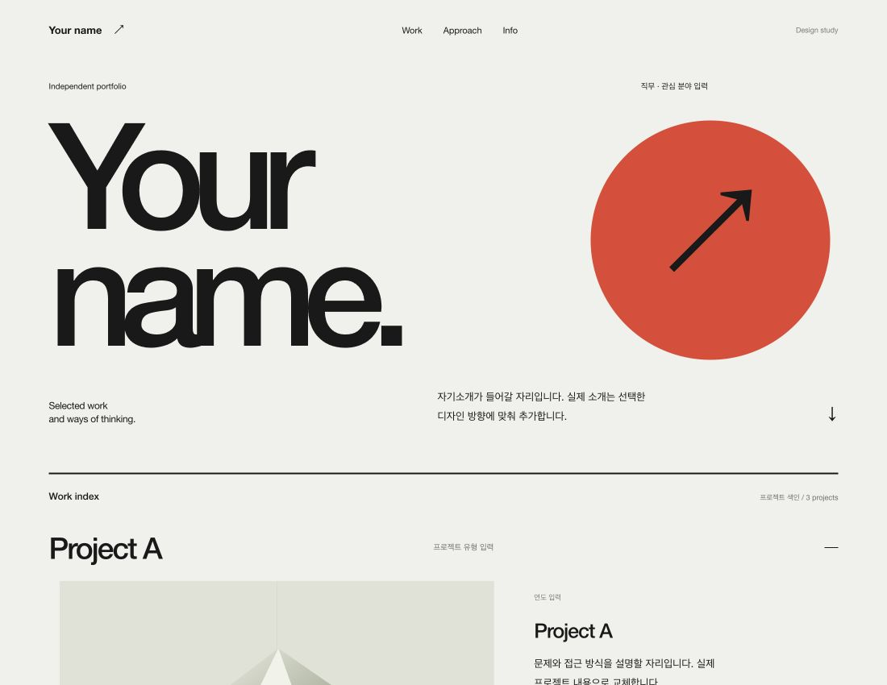
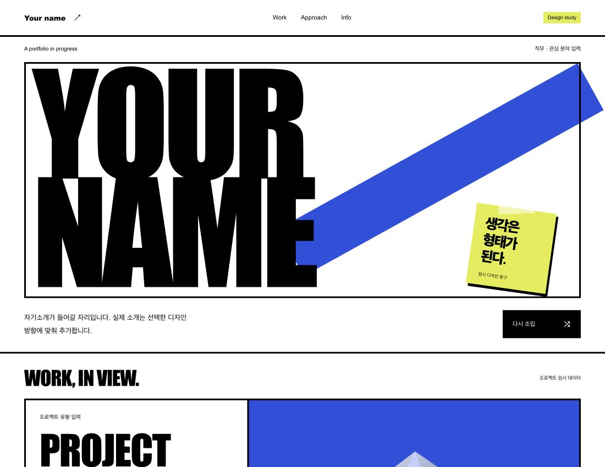
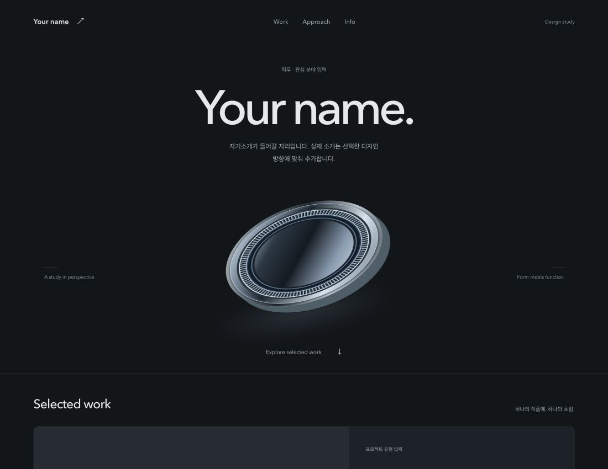
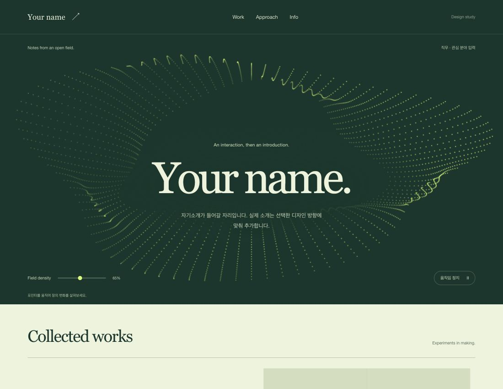
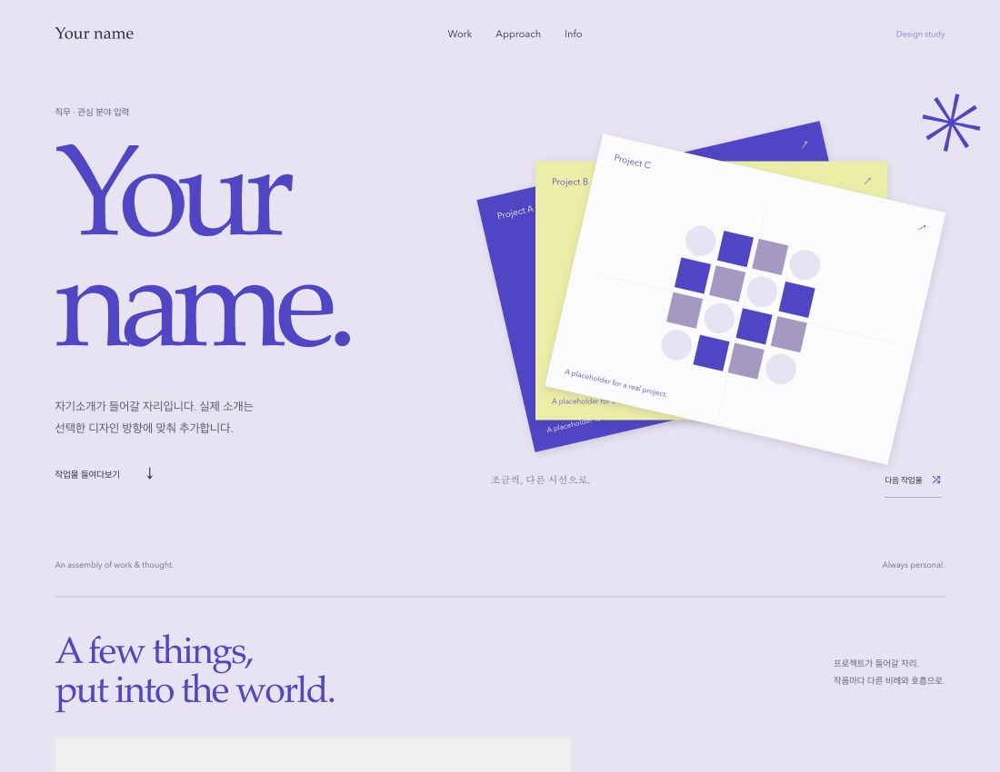

01 / The Index
Swiss Editorial
02 / Hard Cut
Digital Brutalism
03 / Optical System
Premium Technology
04 / Field Notes
Interactive Digital Art
05 / Personal Assembly
Contemporary IdentitySame content.
Five perspectives.
The full portfolio comes next.